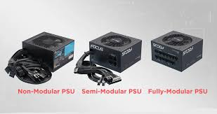
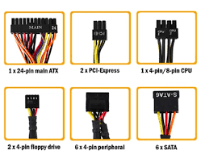
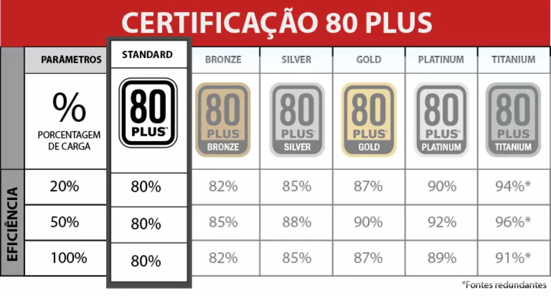

Fontes de computadores, ou unidades de fonte de alimentação (PSUs), são componentes que convertem a corrente alternada (AC)
da tomada da parede em corrente contínua (DC) de baixa voltagem, regulada e adequada para alimentar os componentes internos de um PC,
como a placa-mãe, processador e placas de vídeo.

Tipos de fontes:
Nos tipo de modularidade temos:não modular, semimodular, modular e o formato físico (ATX, SFX), sendo os tipos semimodular e modular ideais para organização de cabos e estética,
enquanto os formatos definem o tamanho físico da fonte para compatibilidade com diferentes caixas de computador.
Fontes não modulares: Todos os cabos são fixos à fonte.
Fontes semimodulares: Alguns cabos são fixos, enquanto outros são destacáveis e podem ser conectados conforme a necessidade.
Fontes totalmente modulares: Todos os cabos são destacáveis, oferecendo a melhor gestão de cabos e um visual mais limpo e organizado.

Alguns modelos:Fonte linear:As fontes lineares são as mais tradicionais;
Fonte chaveada:SMPS – Switch Mode Power Supply;
Fonte comutadaFonte ATX:para computadores;
Fonte de bancada:variável ou ajustável;
Fonte programável Fonte DC-DC:conversora;
Fontes automotivas
